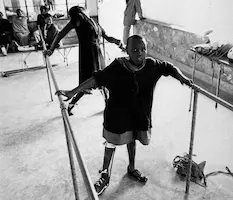
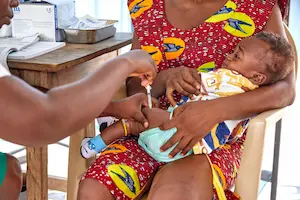

Cote d'Ivoire
| Total population (2015) | 22,702,000 |
| Gross national income per capita (PPP international $, 2013) | 2 |
| Life expectancy at birth m/f (years, 2015) | 52/54 |
| Probability of dying under five (per 1 000 live births, 0) | n/a |
| Probability of dying between 15 abd 60 years m/f (per 1 000 population, 2013) | 414/377 |
| Total expenditure on health per capita (Intl $, 2014) | 187 |
| Total expenditure on health as % of GDP (2014) | 5.7 |
Health Challenges and Vaccination Coverage
Malaria
Malaria remains a significant public health challenge in Côte d'Ivoire, with an incidence of 268 cases per 1,000 inhabitants in 2023. While mortality has decreased by over 50% since 2017, the disease continues to affect vulnerable populations
Learn morePolio
Polio remains a concern in Côte d’Ivoire due to vaccine-derived virus strains. In 2024, over 9 million children were vaccinated in nationwide campaigns to stop the spread.
Learn moreVaccination
As of 2019, approximately 76% of children in Côte d'Ivoire received all three doses of the diphtheria, tetanus, and pertussis (DTP3) vaccine. Measles vaccination coverage for children aged 12–23 months was 70% in 2020. These figures indicate progress but also highlight areas needing improvement
Learn more